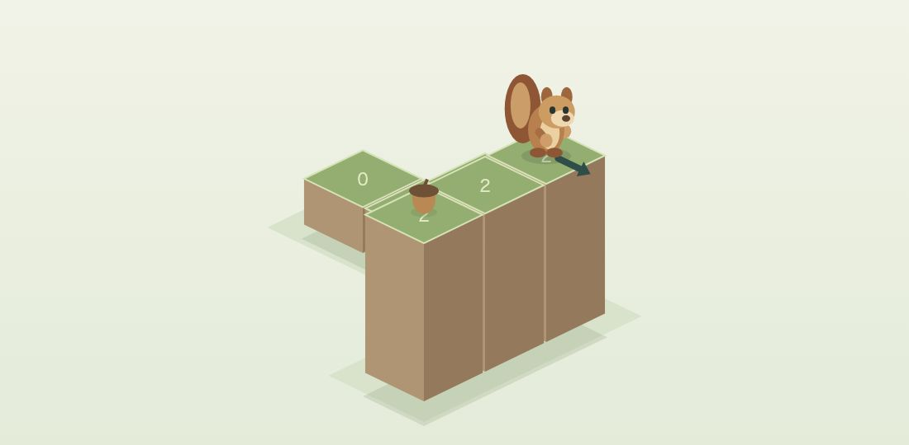
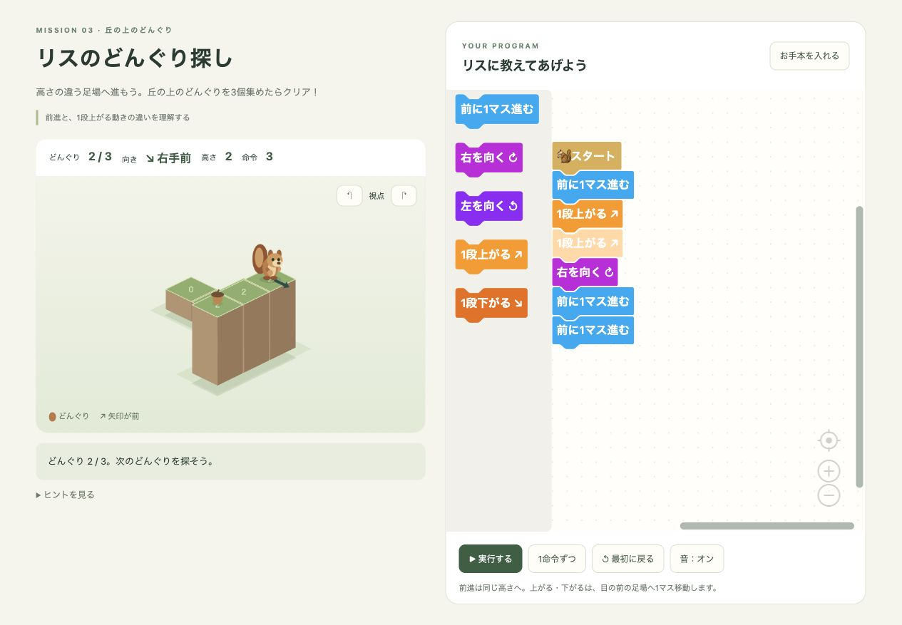

POINT 01 / 向きを読む
右も左も、リスの目線で。
画面を見る自分の右と、リスの右は同じとは限りません。足元の矢印を手がかりに、いま向いている方向から次の動きを考えます。
先生・プログラミング教室のみなさまへ
リスのどんぐり探し
ブロックをつないで、リスと森を探検。
順番・向き・高さ・繰り返しを学ぶ、
全10ミッションのプログラミング教材。

INTRODUCTION MOVIE
画面やリスの動きを、
紹介動画でご覧ください。
PLAY, THINK, TRY AGAIN
リスに動きを教えて、どんぐりを全部集めよう。
うまくいかなければ、ブロックを変えてもう一度。
動きを見て確かめながら、自分のペースで進められます。

どの順番で進む？ どこで曲がる？
リスの目線で、どんぐりまでの道を考えます。
「前に進む」「上がる」「くり返す」。
動きのブロックを使ってプログラムを作ります。
1命令ずつ実行して、予想と比べることも。ブロックを残したまま、何度でもやり直せます。
POINT 01 / 向きを読む
画面を見る自分の右と、リスの右は同じとは限りません。足元の矢印を手がかりに、いま向いている方向から次の動きを考えます。
POINT 02 / 高さを読む
「前に進む」は同じ高さのマスへ。「上がる・下がる」は正面の1段高い・低いマスへ。マスの数字を見て、道に合う命令を選びます。
時間制限はありません。ヒントとお手本もあるので、考える時間を大切にできます。
A LITTLE STEP, A BIG DISCOVERY
はじめは、命令を順番につなぐところから。
段差や繰り返し、分かれ道へ少しずつ進む、
10のミッションを用意しました。
命令を順番につなぐ。
向きと進む順番を考える。
前に進む動きと、段差を上がる動きを使い分ける。
一部のミッションには、使えるブロック数の上限があります。動くプログラムを作ったあとに、繰り返す部分を見つけて見直すきっかけに。
MADE FOR YOUR CLASSROOM
授業やワークショップ、学習支援に。
子どもたちと一緒に、考える冒険を。
1回の購入で、
1団体内の複数端末に。
ZIPを展開し、「index.html」をパソコンのGoogle Chromeで開きます。ゲーム専用アプリのインストールは不要です。
必要なライブラリと素材を同梱。ダウンロード後はオフラインで遊べます。フォルダ一式を保管してご利用ください。
ミッションごとのプログラムとクリア記録をブラウザに保存。音のオン・オフも切り替えられます。
ブラウザの設定やデータ削除、ファイルの移動などにより、記録が残らない場合があります。LET'S THINK TOGETHER
動かす前に予想して、動いたあとに比べる。
授業では、たとえばこんな問いかけから。
「次は、どこに進むと思う？」
リスの向きと道の高さを、一緒に見てみる。「どの命令を変えたら届きそう？」
1命令ずつ動かし、違いが生まれたところを探してみる。LET THE ADVENTURE BEGIN
ブロックで学ぶ立体プログラミング教材
リスのどんぐり探し
2,980円
買い切り・継続的な利用料金なし
詳しい商品情報・購入手続きはBOOTHへ
ゲーム本体・起動案内・遊び方・利用規約・第三者ライセンス案内
BEFORE YOU START